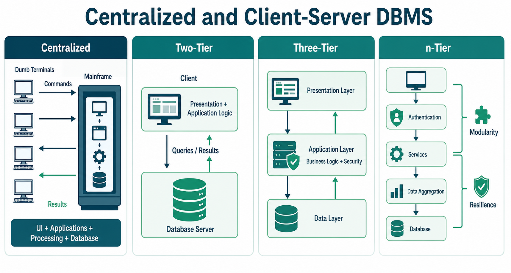

Excellent! This chapter is actually a continuation of DBMS Architecture (1-tier, 2-tier, 3-tier) that you studied earlier. Here, the focus is on where the database is located and how clients communicate with it.
For IBPS SO IT, questions are usually asked on:
- Centralized Architecture
- Client-Server Architecture
- 2-Tier vs 3-Tier
- Advantages and Disadvantages
I'll explain every concept in simple language.
DBMS - Centralized and Client-Server Architecture
First Understand Why Different Architectures Exist
Imagine a school.
There are two ways to maintain student records.
Method 1
One office stores everything.
Every student goes there.
Student 1
\
Student 2 ---> Office
/
Student 3This is Centralized Architecture.
Method 2
Students visit different counters.
Each counter communicates with the main office.
Student
↓
Counter
↓
Main OfficeThis is Client-Server Architecture.

Centralized DBMS Architecture
What is Centralized Architecture?
Book says
All database operations, applications, and user interfaces are managed by one central computer.
Simple Meaning
Everything happens on one powerful computer (Mainframe/Server).
Users don't process anything.
They only send requests.
Diagram
Terminal 1
\
Terminal 2 -----> Central Server
/
Terminal 3Only one server.
Everything happens there.
Real-Life Example
Suppose a university has
- 100 computers
- 10 departments
Every computer connects to one main server.
Student checks result.
↓
Request goes to server.
↓
Server processes it.
↓
Server sends result back.
The client computer does almost nothing.
What is a Terminal?
The book repeatedly mentions Terminal.
Many students get confused.
A Terminal is simply
A device used only to send input and display output.
It has almost no processing power.
Think of it as a monitor + keyboard connected to a main computer.
Example
Old railway reservation systems.
Terminal
↓
Mainframe
↓
ResultThe terminal itself doesn't search the database.
How Centralized Architecture Works
Step 1
User enters request.
Example
Show Rahul's Marks↓
Step 2
Terminal sends request.
↓
Step 3
Main Server executes query.
↓
Step 4
Server returns result.
↓
Step 5
Terminal displays it.
Simple flow:
User
↓
Terminal
↓
Mainframe Server
↓
Database
↓
ResultExample
University Database
Student wants
Semester Result.
Student
↓
Department Computer (Terminal)
↓
Central Server
↓
Database
↓
Marks Displayed
Advantages of Centralized Architecture
1. Centralized Control
Everything is managed from one place.
Example
If admin wants
New Password Policy
Only one server needs updating.
2. Easy Maintenance
Suppose software needs updating.
Only one computer is updated.
No need to update
100 terminals.
3. Better Security
Since data exists in one place,
security becomes easier.
No copies are scattered across clients.
Disadvantages of Centralized Architecture
1. Scalability Problem
Suppose
10 users
↓
Works fine.
Now
10 lakh users.
One server becomes overloaded.
Performance decreases.
2. Single Point of Failure
⭐⭐⭐⭐⭐
Very Important
If the server crashes
Server ❌Everything stops.
Nobody can access data.
Entire system fails.
IBPS Question
Biggest disadvantage?
✅ Single Point of Failure.
Client-Server Architecture
This architecture was developed to overcome the problems of centralized systems.
What is Client-Server Architecture?
Book says
Workload is divided.
Client
handles
- User Interface
- Local Processing
Server
handles
- Database
- Storage
- Processing
Simple Meaning
Instead of one computer doing everything,
the work is shared.
Client
Who is the Client?
The computer or application used by the user.
Examples
- Mobile App
- ATM Machine
- Banking Software
- Web Browser
Client's job
- Take input
- Show output
- Send request
Server
Server stores
- Database
- Business Logic
- Data Processing
Server is much more powerful.
Real-Life Example
Suppose you use Flipkart.
Mobile App
↓
Flipkart Server
↓
Database
↓
ResultYour phone
is the Client.
Flipkart Database
is the Server.
Why Client-Server is Better?
Because
Client
does UI work.
Server
does database work.
Load gets divided.
Two-Tier Client-Server Architecture
⭐⭐⭐⭐⭐
Very Important
Diagram
+------------------+
| CLIENT |
| UI + Application |
+------------------+
│
▼
+------------------+
| SERVER |
| Database |
+------------------+Only
Client
and
Server.
No middle layer.
Client Responsibilities
- User Interface
- Some Business Logic
- Sending Queries
Server Responsibilities
- Store Data
- Execute Queries
- Return Results
Example
Bank Teller
↓
Bank Software
↓
Database Server
Flow
Teller
↓
Client Software
↓
Database Server
↓
Balance DisplayedAdvantages
✔ Simple
✔ Easy to Develop
✔ Fast
Disadvantages
Book says
Maintenance.
Suppose
Software changes.
Every client computer
must be updated.
Imagine
5000 computers.
Difficult.
Another problem
Too many clients
↓
Server overloaded.
Three-Tier Client-Server Architecture
⭐⭐⭐⭐⭐
Most Important
Already studied in previous chapter.
Here we'll revise.
Diagram
Client
↓
Application Server
↓
Database ServerThree layers.
Layer 1
Presentation Layer
(Client)
Handles
- Screens
- Forms
- Buttons
Example
ATM Screen
Layer 2
Application Layer
(Middle Tier)
Brain of system.
Handles
- Validation
- Authentication
- Business Rules
Example
Checks
Password Correct?
Balance Available?
Layer 3
Database Layer
Stores
Actual Data.
Example
Restaurant Website
Customer
↓
Website
↓
Application Server
↓
Database
Why Middle Layer?
Suppose
1000 users
send requests.
Application Server
filters
valid requests.
Only necessary requests
reach database.
Database load decreases.
Advantages
Better Load Management
Application Server
handles
many requests.
Database becomes free.
Better Security
Users cannot directly access database.
Everything passes through
Application Server.
Think of the application server as a security guard.
Real-Life Example
Hospital
Doctor wants
Patient History.
Doctor
↓
Hospital Software
↓
Application Server
↓
Database
Patient never directly accesses the database.
Difference Between Two-Tier and Three-Tier
| Two-Tier | Three-Tier |
|---|---|
| Client directly talks to Database | Client talks to Application Server |
| Less Secure | More Secure |
| Simple | Better for large systems |
| Limited Scalability | Highly Scalable |
| Business Logic in Client | Business Logic in Middle Layer |
n-Tier Architecture
Book says
Some systems have
more than
3 layers.
Why?
Large companies
need separate services.
Example
Amazon
Client
↓
Authentication Server
↓
Payment Server
↓
Recommendation Server
↓
DatabaseEach performs one job.
Benefits
Modularity
Each layer
can be developed independently.
Example
Payment Team
works separately.
Authentication Team
works separately.
Resilience
Suppose
Recommendation Server
fails.
Payment still works.
Entire system doesn't crash.
Understanding the Second Diagram
The second image shows different types of clients connected through a communication network.
Let's understand each one.
Diskless Client
Client
(No Hard Disk)Everything comes from the server.
Example
Thin Client in schools.
Client with Disk
Has
Hard Disk
*
Own Software.
Still depends on server.
Server
Stores
Database
Services
Resources.
Server + Client
One machine
acts as
both
Client
and
Server.
Example
Branch Office
It uses another central server,
but also serves local users.
Summary of Centralized vs Client-Server
| Feature | Centralized | Client-Server |
|---|---|---|
| Processing | One central server | Shared between client and server |
| Client Processing | Almost none | Performs UI and some processing |
| Scalability | Poor | Better |
| Security | Good | Better (especially 3-tier) |
| Failure | One server failure stops everything | Better fault tolerance |
| Maintenance | Easy | Moderate |
Centralized vs Two-Tier vs Three-Tier
| Feature | Centralized | Two-Tier | Three-Tier |
|---|---|---|---|
| Client Processing | No | Yes | Yes |
| Application Server | No | No | Yes |
| Database Server | Yes | Yes | Yes |
| Security | Medium | Better | Best |
| Scalability | Low | Medium | High |
| Used Today | Rare | Desktop Apps | Banking, Amazon, Google, Flipkart |
⭐ IBPS SO IT Quick Revision
| Topic | Remember |
|---|---|
| Centralized Architecture | One central server does everything |
| Terminal | Input/Output device with minimal processing |
| Biggest disadvantage of Centralized | Single Point of Failure |
| Client | User-facing machine/application |
| Server | Stores database and processes requests |
| Two-Tier | Client ↔ Database Server |
| Three-Tier | Client ↔ Application Server ↔ Database Server |
| Middle Tier | Business Logic + Security + Validation |
| n-Tier | More than three layers for large applications |
| Diskless Client | No local storage; depends entirely on the server |
🎯 IBPS SO IT Frequently Asked Questions
Q1. What is a Centralized DBMS?
✅ A DBMS where all database operations are managed by a single central server.
Q2. What is the role of a Terminal in a Centralized DBMS?
✅ It only sends user input to the server and displays the returned output; it performs little or no processing.
Q3. What is the biggest drawback of a Centralized Architecture?
✅ Single Point of Failure.
Q4. What is the main difference between a Client and a Server?
✅ The Client handles user interaction (UI), while the Server stores data and processes database requests.
Q5. In a Two-Tier Architecture, who directly communicates with the database?
✅ The Client.
Q6. What extra layer is added in a Three-Tier Architecture?
✅ The Application (Middle) Layer.
Q7. Why is a Three-Tier Architecture more secure?
✅ Because users cannot directly access the database; every request is validated by the Application Server, which acts as a gatekeeper.
🧠 Final Memory Trick
Remember this progression:
Centralized
User → Main ServerTwo-Tier
Client → Database ServerThree-Tier
Client → Application Server → Database Servern-Tier
Client → Multiple Service Layers → DatabaseAs you move from Centralized → Two-Tier → Three-Tier → n-Tier, the system becomes more scalable, more secure, easier to maintain, and better suited for modern applications.